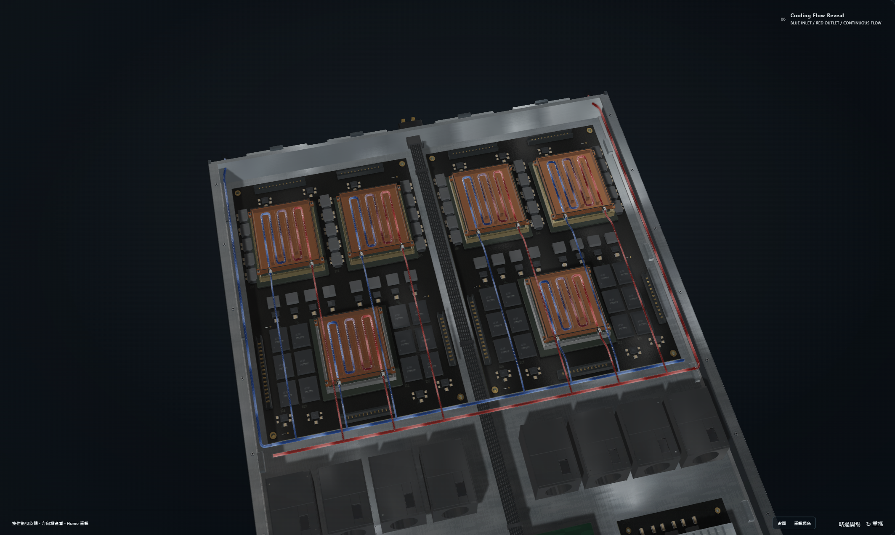
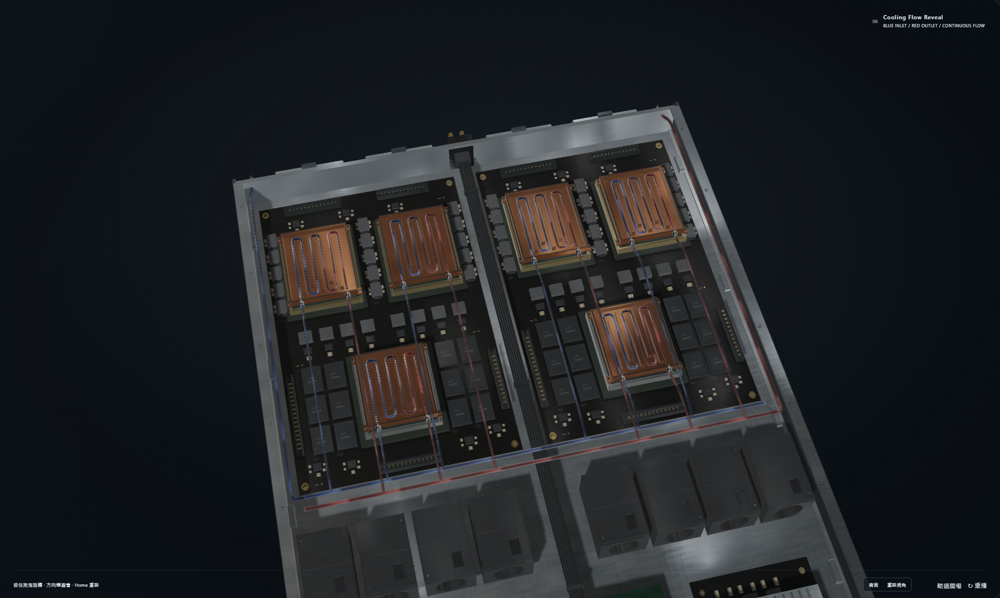
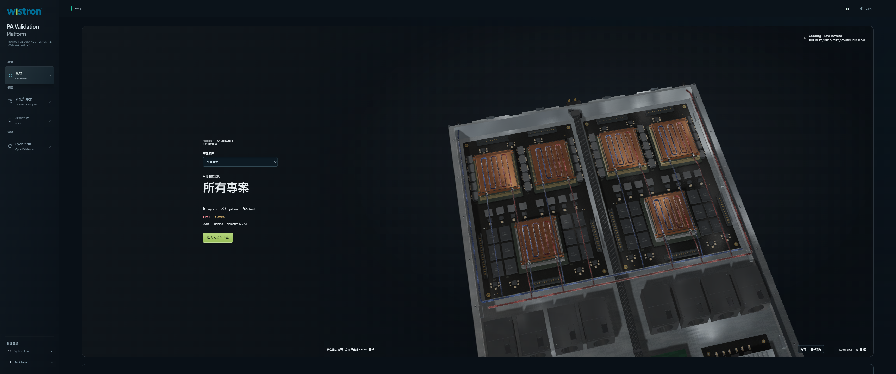
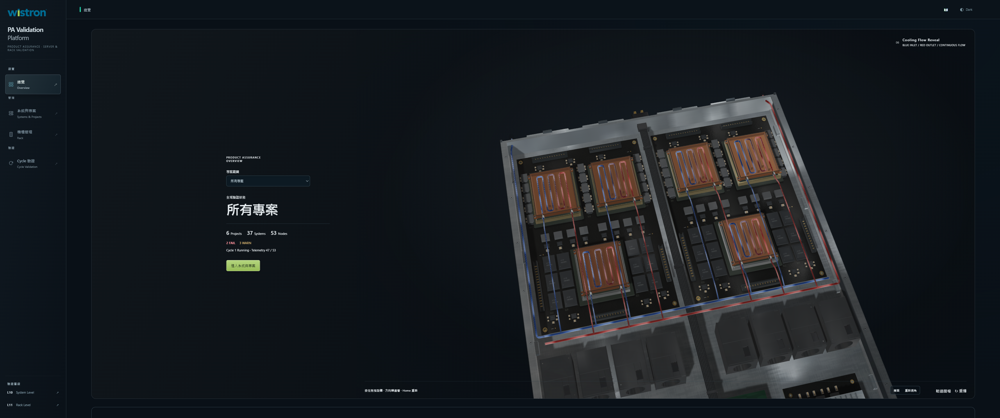
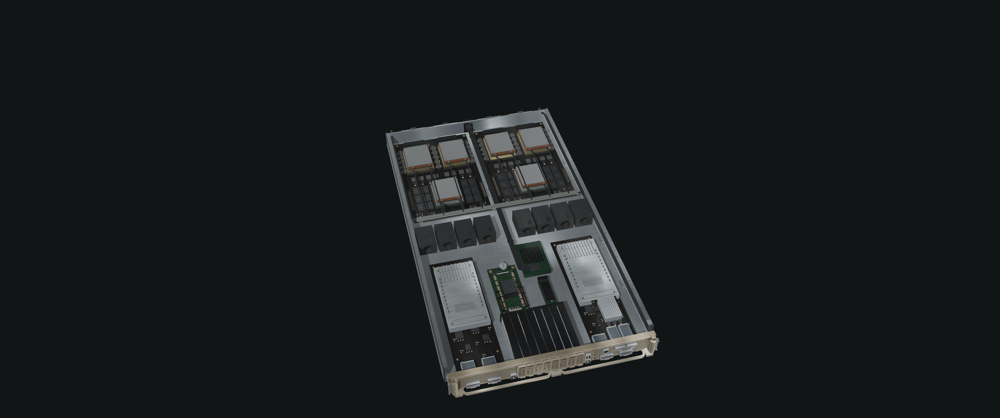

L10 Cooling Assembly V3 · Final frozen Round 2
Native Chromium / WebGL screenshots. Raw PNGs are linked directly; no image postprocessing. Baseline 5f8e059c6e0c1a614fe412b990a463d643fc0a32. Capture validation PASS establishes camera/resource consistency and runtime evidence; it is not a photorealism score.
The original environment, HDR source, exposure, rotation and tone mapping remain fixed. V3 intentionally corrects the specular prefilter only for the cooling assembly and lid. Candidate-only macro cameras and native cinematic camera changes are labeled separately.
Final visual review · Final frozen Round 2 · 86.4 / 100；89 未達
已完成兩輪局部精修，沿用 V2 八維等權評分：83.5 → 86.375（顯示 86.4）。這是原始 Chromium / WebGL 截圖及原生影片取樣影格的主觀視覺評估，不是工程 PASS 推算的分數，也不宣稱照片級驗收合格。兩輪後停止，不進行第三輪。
Commit: 本報告隨同提交；精確 Commit SHA 與該次遠端 CI 在最終交付訊息列出。 · Overall visual score: 86.4
Engineering acceptance
Unmodified legacy assertion findings are reported separately: the original core geometry planar-normal assertion has a historical-baseline failure; the original V2 suite freezes the entire Rack source file and therefore fails on the authorized 1U blanking rendering fix. These assertions were not deleted or weakened. V3 retains the original geometric safety functions and verifies the bounded geometry exceptions, 1U mesh reuse, all other Rack geometry and unchanged animation. Original V2 frozen-contract output · Round 1 ledger
Blender / GLB / PBR changes
- Round 1 Blender：兩支歧管 20→64 邊；branch Boolean 後圓柱徑向 split normals、端面 flat normals、顯式 UV seam。外徑 .017／內徑 .012、流路端點不變。平均法線偏差 54.58°／54.55° → 0.00132°／0.00137°。
- Round 1 Blender：六冷板蓋邊 .0018／3 段 → .0022／5 段，保留所有上下平面與包絡；十二接頭使用原範圍內階梯壓接套環、倒角與密封帶。
- GLB：companion 5,050,888 bytes，94,888 triangles，54 nodes／12 materials。六接觸、TIM、24 mounting feet 與全部 22 fluid POSITION/NORMAL/UV/index arrays 逐位元不變。裸板 Blender／GLB／PBR 不變。
- PBR：四張原 MR maps 與全部十二個材質 scalar factors 不變。新 368,708-byte 環境 atlas 使用同一 CC0 HDR、.38 曝光及方向，1024 samples + PDF／solid-angle source mip filtering；只供 companion／lid，裸板／gold／Rack 保留原 atlas。
- Runtime flow：提高原 stream core 的可見範圍、藍紅光學色差及移動前緣寬度；減少 ghosted 金屬遮蔽。無 Emission、Bloom、RGB 燈、靜態線替代；速度、相位端點、流向及 reveal 時間不變。
- Round 2 shader only：CPU satin 與 GPU machining 分別加入 .07／.16 方向反射，只有 cover material 會進入此分支；上蓋使用 .305 rolled finish 與 .10 方向性。沒有再編輯 Blender／GLB。
- Camera：只把冷卻近景拉回窗口由 15.1–16.5s 改為 14.3–16.5s，納入抬蓋的真實高度。時間軸 keys、39.7s、3.8s、lid transform／Rack 動作不變。受控 Before/After 仍使用同一固定相機。
- Rack：來源是 renderer 的 editorial PLAN，不是正式 Inventory；底部 editorial-infrastructure-blank 原記錄 kind=blanking、rack_u=4、rack_size=4，鄰接 reserve 為 rack_u=9、rack_size=5。它們表示連續占位群組，現在分別重用 4／5 片原既有 1U panel；上方 U47、U48 原 1U 保持逐位元一致。沒有改 Inventory，也沒有加入 server 專屬零件或 Compute Tray 動畫。
- 依 impeccable 採局部精修，保留既有介面及保護範圍；一次 detector 的既有 Dashboard 字級、對比、樣式提示另存，未擴大修改 Cycle／Telemetry／Agent。
Cooling GLB SHA-256: 5cfef980e39a446f3157e214b5e1f2c4058e6ba65b3e133557f5d5cd43d05cdc
Unresolved issues / limits
- 89 分目標未達；兩輪後停止。金屬大平面、細接頭密封根部與小接觸陰影仍有 CGI／工程模型感，不能宣稱照片級驗收完成。
- 正常 Dashboard 的流向前緣已更清楚，但仍偏細；完整總成入鏡後到上蓋出現的可觀看停留仍短，未為分數更動固定總時長。
- 原 core-scene 法線 assertion 與 V2 frozen-Rack assertion 保留 FAIL，不能把全部本機測試描述為全綠。
- 影片為原生 3440×1440／25 fps WebM，容器 45.04s 含 setup／收尾；其中 39.7s authored Replay 實測 39.830s，未剪輯、變速、補幀。25 fps 是編碼頻率，不是 GPU FPS。
- 影片資源檢查取得 companion／renderer／新舊 atlas hash；大型 bare GLB response 被 inspector cache 淘汰，該次 response hash 未取得。裸板磁碟 hash 與受控截圖 resource hash 另有驗證，不補造缺失。
- 視覺評分使用原始 PNG、正常 Canvas 及 38 個原生 WebM 解碼取樣影格；不是逐一人工連續觀看全部 1126 個影片影格，亦非跨 GPU 硬體認證。
- 原創概念組裝不是 OEM CAD、製造公差、水壓合格或 CFD。無量測 BRDF／體積折射；密封與淨空僅代表本模型幾何測試。
- 兩個既有未追蹤檔 compute-board-prototype.blend1／surface-normal.png 原 hash 保留，未納入提交。
A · Cold Plate Installation
Controlled comparison: identical camera matrices, lighting, exposure and tone mapping.
B · Manifold / Plumbing
Controlled comparison: identical camera matrices, lighting, exposure and tone mapping.
C · Dynamic Cooling Flow
Controlled comparison: identical camera matrices, lighting, exposure and tone mapping.
D · Solid Cooling Assembly
Controlled comparison: identical camera matrices, lighting, exposure and tone mapping.
E · Lid Closure
Controlled comparison: identical camera matrices, lighting, exposure and tone mapping.
F · Rack Integration
Controlled comparison: identical camera matrices, lighting, exposure and tone mapping.
Actual Dashboard · 2127 × 1272 WebGL canvas
Shipping Dashboard with its original layout and authored camera. The 3440 × 1440 browser viewport produces this 2127 × 1272 canvas; this is not the full-window review camera. The two flow times share the same route geometry, lighting and speed.
Before · V2 · dashboard-flow-A-2127x1272
After · Final frozen Round 2 · dashboard-flow-A-2127x1272 
Before · V2 · dashboard-flow-B-2127x1272After · Final frozen Round 2 · dashboard-flow-B-2127x1272Complete Dashboard viewport

Before · V2 · dashboard-flow-full-page-3440x1440
After · Final frozen Round 2 · dashboard-flow-full-page-3440x1440Manifold · controlled original close view
Controlled comparison: identical camera matrices, lighting, exposure and tone mapping.
Cold Plate / Connectors · controlled original close view
Controlled comparison: identical camera matrices, lighting, exposure and tone mapping.
Before · V2 · Cold Plate / Connectors · controlled original close view · renderer stateAfter · Final frozen Round 2 · Cold Plate / Connectors · controlled original close view · renderer state Candidate-only diagnostic closeups
Additional opt-in inspection cameras, outside the movie. These are diagnostic evidence, not controlled Before / After comparisons.
Lid sequence · 16.4 s / 17.0 s / 17.6 s
The fixed-camera sequence separates material changes from the authored cinematic framing. The recorded closure fractions are 0 / 0.5 / 1. At 16.4 seconds the raised cover is already visible; the additional native 16.0-second image below documents the completely open cooling assembly before it appears.

After · Final frozen Round 2 · Native 16.0 s · complete open assembly hold · renderer stateBefore closure · 16.4 s
Controlled comparison: identical camera matrices, lighting, exposure and tone mapping.
Mid closure · 17.0 s
Controlled comparison: identical camera matrices, lighting, exposure and tone mapping.
After closure · 17.6 s
Controlled comparison: identical camera matrices, lighting, exposure and tone mapping.
Native cinematic · before closure
Authored cinematic camera. Framing changes are intentional and this pair is not used to claim fixed-camera material improvement.
Native cinematic · mid closure
Authored cinematic camera. Framing changes are intentional and this pair is not used to claim fixed-camera material improvement.
Native cinematic · after closure
Authored cinematic camera. Framing changes are intentional and this pair is not used to claim fixed-camera material improvement.
Rack · full front
Controlled comparison: identical camera matrices, lighting, exposure and tone mapping.
Rack · exploded animation context
Controlled comparison: identical camera matrices, lighting, exposure and tone mapping.
Before · V2 · Rack · exploded animation context · renderer stateAfter · Final frozen Round 2 · Rack · exploded animation context · renderer state Bottom U1–U4 · native full-front crop
Native Chromium screenshot crop, without resampling or pixel editing. Camera and illumination match the full-front frame.
Adjacent U5–U9 · native full-front crop
Native Chromium screenshot crop, without resampling or pixel editing. Camera and illumination match the full-front frame.
Upper U47–U48 · native full-front crop
Native Chromium screenshot crop, without resampling or pixel editing. Camera and illumination match the full-front frame.
Physical 1U blanking panels · diagnostic closeups
Both closeups use the same yaw, elevation and distance; only the vertical target moves. Every visible panel is an instance of the original 1U mesh and material. Inventory grouping and U occupancy remain unchanged.
Protected hardware reference views
BF3 × 2 / CX7 × 1
Controlled comparison: identical camera matrices, lighting, exposure and tone mapping.
Eight E1.S slots / gold Front Panel
Controlled comparison: identical camera matrices, lighting, exposure and tone mapping.
Bounded second-round review
Three selected native Round 1 screenshots are retained in the repository with their sidecars. These record the evidence used for the final small material correction; no third polish round was performed.
Complete native WebM recording
Authored cinematic duration: 39.7 seconds. Measured Replay wall time: 39.83 seconds. Native file duration: 45.04 seconds. The uncut file includes initial loading/setup and completion overhead; no speed change, frame interpolation or reconstructed frames were used.
Open complete native WebM · Timing, source hashes and actual clock trace
Complete native cinematic recording · Recording measurements. These links become available after the final candidate recording.